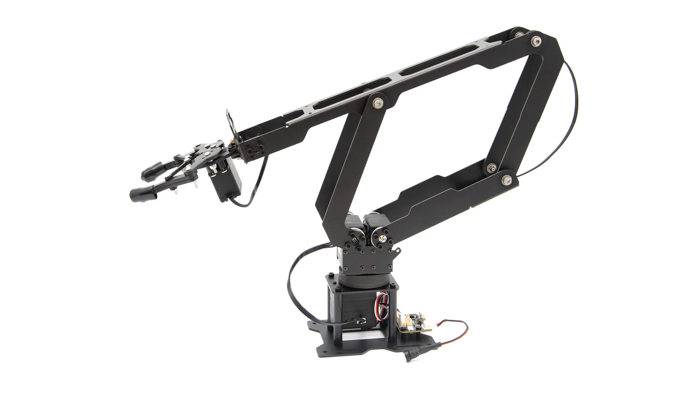
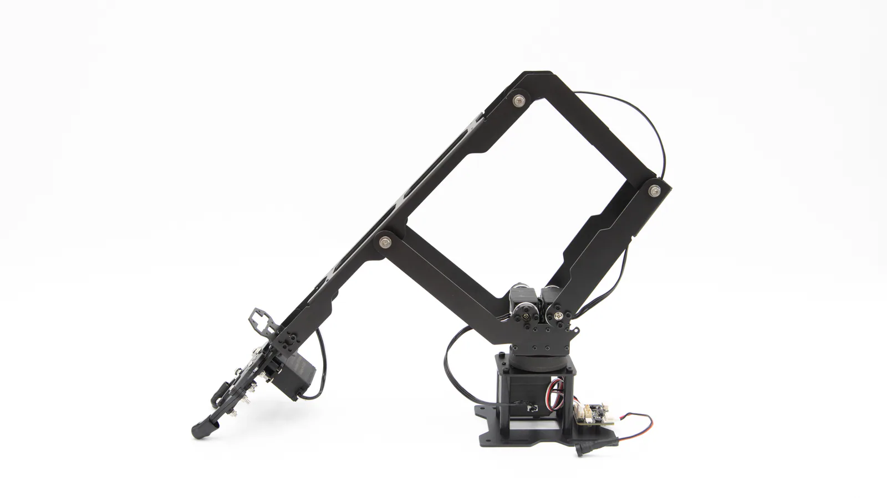
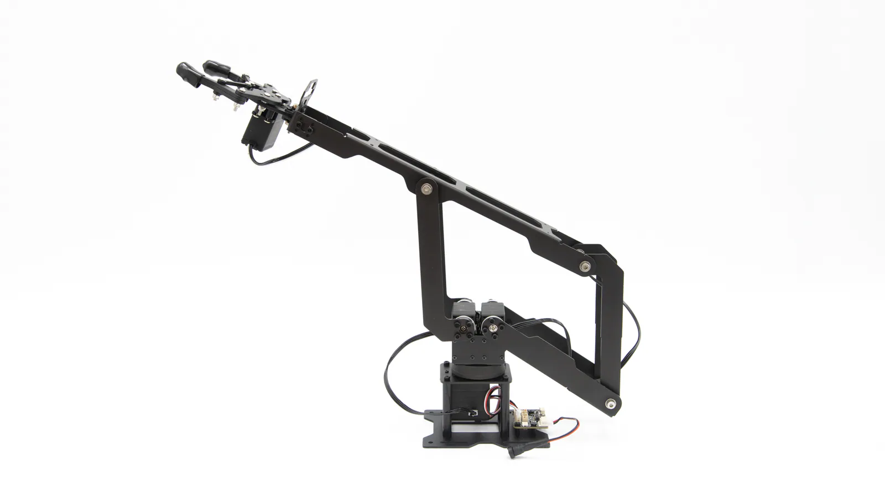
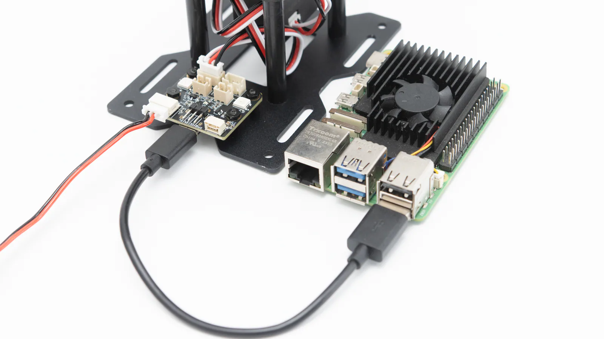
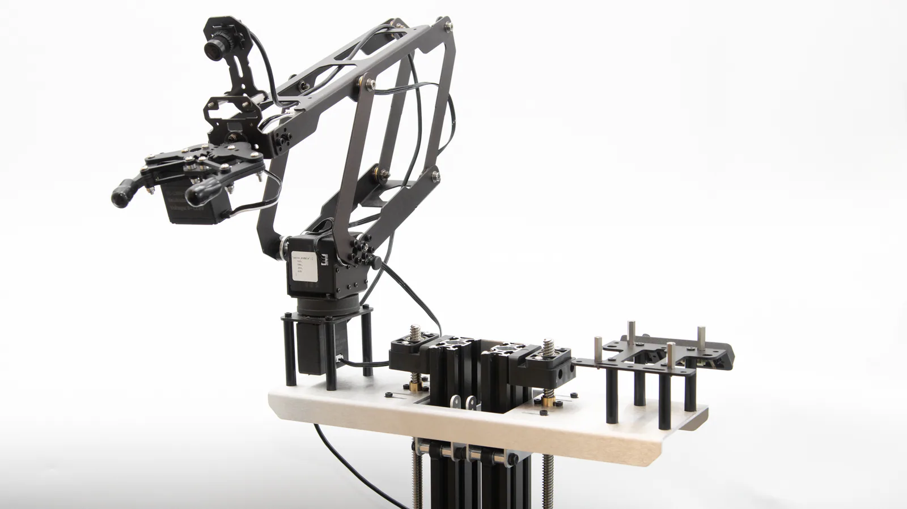
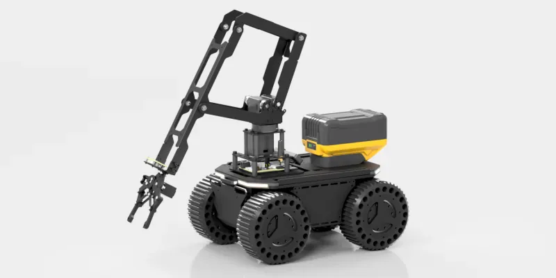

Carry useful payload in motion
Higher payload capacity leaves more operating margin for grasping, transfer, and end-of-arm tools.
More complete task capabilityMOBILE ROBOT ARM MODULE
LinkArm-M
The parallel linkage gives the arm a more stable mechanical structure while reducing servo heat under load, making thermal protection less likely to interrupt a task. LinkArm-M does not include the ESP32-S3 sub-controller board and is intended for users who already have their own control platform.

WHY PARALLEL
Compared with a conventional serial arm, LinkArm-M focuses on four things that matter when the arm becomes part of a moving robot.
Higher payload capacity leaves more operating margin for grasping, transfer, and end-of-arm tools.
More complete task capabilityThe linkage provides firm mechanical support and reduces the effect of payload on arm posture.
More composed while the base movesLower thermal stress under load is useful for repeated motion and tasks that hold a pose.
Better suited to sustained operationReducing the chance of servo over-temperature protection helps prevent unexpected pauses during a task.
Higher system availability
STRUCTURE
LinkArm-M takes a different mechanical approach from a typical serial arm. Its linkage and joint servos share the load, helping the arm stay stable while moving, starting, stopping, or holding position.

MECHANICAL DRAWING
A DXF drawing is available to support mechanical integration and further development.
SPECIFICATIONS
Key specifications for the LinkArm-M robot arm module.
| Mechanical | |
|---|---|
| Degrees of freedom | 3+1 DOF |
| Arm weight | 780 g (G-clamp not included) |
| Maximum payload | 1 kg |
| Maximum reach | 330 mm |
| Base rotation | 180° |
| Repeatability | ±8 mm (under the same payload) |
| Supported desktop thickness with G-clamp | 7–50 mm |
| Electrical | |
| Operating voltage | 9–12.6 V (supports direct power from a 3S lithium battery) |
| Peak current | 3 A |
| Power | 36 W |
| Control and development | |
| Host connection | USB |
| Control interfaces | CLI / Python SDK / JSON |
| Host platforms | Raspberry Pi, Jetson, RK-series controllers, or PC |
| Software support | Open-source Python SDK and control examples |
| Construction and mounting | |
| Material | Aluminum alloy |
| Mounting patterns | 70 × 63.5 mm (4 × 4 mm-diameter holes) / 36 × 50 mm (4 × 3 mm-diameter holes) |
OPEN INTEGRATION
LinkArm-M supports PC, Jetson, RK-series controllers, Raspberry Pi, and similar host platforms.

MOBILE BASE INTEGRATION
The parallel structure is designed around mobile robot requirements. Interfaces on the arm driver board can control DC devices and onboard RGB LEDs, while the included camera bracket provides a straightforward way to add a camera.
Drive the base close to a target, then use the arm to pick, place, or transfer the object.
Carry a camera, sensor, or tool for close-range interaction with equipment and the surrounding environment.
Connect the arm to the existing host so it can work alongside wheels, lifts, gimbals, and other robot subsystems.



CHOOSE YOUR VERSION
The main hardware distinction between LinkArm-LT and LinkArm-M is whether the ESP32-S3 sub-controller board is included.
| Comparison | LinkArm-LT | LinkArm-M |
|---|---|---|
| Arm structure | Parallel robot arm | Parallel robot arm |
| ESP32-S3 sub-controller | Included | Not included |
| Best suited to | Users who want a complete sub-controller solution and less low-level integration work. | Users who already have their own controller, drive system, or robot control architecture. |
| Choose it when | You want to bring the arm into a robot system more quickly. | You want to keep full control over the control hardware. |
No additional differences are claimed here beyond the confirmed controller-board configuration.
DECISION
Choose M when your robot already has a stable sub-controller and actuator architecture, and you only need LinkArm's mechanical structure and payload advantages.
TUTORIALS & DOCUMENTATION
Step-by-step tutorials and open-source code cover mechanical installation, external controller setup, Python examples, and full-system integration.
Complete the connection and basic motion checks first to verify the arm and control path.
Connect the arm over USB to a Raspberry Pi, Jetson, RK-series controller, or PC.
Start with the CLI and Python SDK, then extend the examples with your own task logic.
Use the drawings, mounting patterns, and product documentation to install the module on a mobile robot.